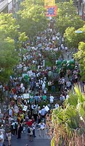
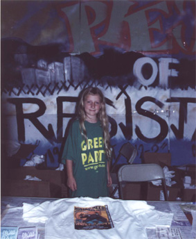

D2KLA
Green Party at D2KLA
Los Angeles, August 13th-17th
www.d2kla.org
At the Green Party of California state meeting in Berkeley on April 28th-30th, 2000 delegates from around the state voted not hold an otherwise already regularly-scheduled meeting, and instead direct the party's 108,000 members to come to LA to participate in the various D2KLA events surrounding the national Democratic Party convention..
GREEN PARTY GOALS FOR D2KLA
- portray Green Party as logical/positive alternative for people criticizing Democrats and/or the two-party system
- link/network with other activists in attendance
- register attendees Green
- show visible Green presence in marches, demonstrations, other events
- make connections with media
- highlight our candidates in 2000
- emphasize that Nader belongs in the debates
HOW TO GET INVOLVED IN LOS ANGELES
- Participate in the marches, rallies and other events already planed as part of D2KLA
by your presence and actions, let them know about the Green Party as a viable alternative for the issues they are concerned about (see full schedule of events below). Spread that word that Nader belongs in the debates. Click here to find out what actions we can take to promote it: http://votenader.com/debates/index.html
- Wear a Green Party t-shirt while in the marches –- green-colored Green Party shirts will be available in LA, so let's be visible. To pick up your shirt, come to the Green Party party on Sunday night (on the Santa Monica pier) to pick up your shirt ($9 while at D2K, $10 after). Also, bring your existing Green Party shirts to wear as well, as you’'ll need a different one each day because it will be hot - downtown LA in summer!
- Register people Green / pass out Green Party literature /march with Green banners
let's bring people into the Green Party that share issues with us - to help do Green registration, bring a clip board (or two); some voter registration forms (some will be available in LA, better to come prepared); quality Green Party literature; and Green Party banners. Contact David Espinoza (Santa Cruz Greens) at ------ let him know which events at which you would do voter registration.
- Walk precincts for Green candidates on Sunday, August 13th
we will be having a precinct walk for Green candidates Nader, Medea Benjamin and Sara Amir, in Sara’'s district (42nd State Assembly, Hollywood/West Hollywood) see below to be a part of this fun interaction with real people
- Attend the Green Party party on Sunday evening, August 13th on the Santa Monica Pier
there will be a mass event at Santa Monica beach just south of the Santa Monica Pier, on Sunday evening, August 13th, starting at 7pm. Later that evening (8:30 pm) there is a Democratic Party party on the Pier for the conservative congressional ‘Blue Dog Democrats’'. The Green Party has procured a restaurant on the Pier the same evening. The restaurant is Rusty’'s Surf Ranch, at the base of the ramp down to the Pier. The restaurant will be open all day, but the Green Party event will begin there at 8pm. We will have speakers, entertainment and a vegetarian buffet, as well as cash bar. This will also be a distribution point for Green Party t-shirts.
- Join the Green Party D2KLA list-serve (gpca-d2kla@greens.org) to coordinate with other Greens who will be in LA (this will be updated during the convention week)
To susbscribe to gpca-d2kla, send a message to ------ with "subscribe" in the message body. The robot will reply with instructions to confirm your subscription. That's to protect you from pranksters subscribing you against your will. Turn off any "formatting" in your email writing program, and hit "reply." Copy the confirmation line from the robot's message into your reply, and delete everything else.
- Visit the D2KLA web site www.d2kla.org
- Check out the Los Angeles Independent Media Center web site covering D2KLA la.indymedia.org
SCHEDULE OF EVENTS
Saturday, August 12th
- Sign & Banner making at Green Party candidates Medea Benjamin/Ralph Nader campaign office
11:00 am - 3:00 pm. Highland Park, 106 North Avenue 56 @ Figueroa. Bring your own supplies: paper, cloth, markers, paint. From the 110 Pasadena Freeway, it's just a few exits past downtown -- exit Avenue 52, take a left to Figueroa (first stop light) and take a right on Figueroa to Avenue 56, take a left, we're on the left and a public lot is on the right (bring quarters, all day parking just $1). From the 134, take the Figueroa Exit south to Avenue 56, make a left. This will also be a distribution point for Green Party t-shirts.
Saturday, August 12th
- Office Warming/Meet the Green Party Candidates
7:00 pm - 9:00 pm. Green campaign office, 215 S. La Cienega Blvd. (just south of Wilshire). Free Public Parking is at La Cienega and Gregory Way, less than a block south of the office. Medea and Sara will be present. Donations gratefully accepted. Checks can be made payable to: Sara Amir for State Assembly or Medea Benjamin for US Senate -- or both. This will also be a distribution point for Green Party t-shirts.
=====================================================
Sunday, August 13th
- Precinct-walking for Green candidates in 42nd State Assembly District
1:00 pm 215 S. La Cienega, Suite 101 (just south of Wilshire).
Greens from around state will walk Green candidate literature in Sara Amir's Assembly District (Hollywood/West Hollywood) for Green candidates Ralph Nader, Medea Benjamin and Sara Amir. We will give a short training and explanation before sending volunteers out in pairs. Expect to be finished by 4:00 pm. From the office, it's a quick bus ride to Santa Monica on the new Metro Rapid Wilshire Bus Line. Free Public Parking is at La Cienega and Gregory Way, less than a block south of the office (closes at 11pm) contact Lynne Serpe to be a part of this fun interaction with real people. This will also be a distribution point for Green Party t-shirts.
Sunday August 13
- March/Rally for Mumia Abu-Jamal
1:00 pm to 7:00 pm Downtown LA (323) 653-4510
Sunday, August 13th
- March for Workers Rights/March against Sweatshops
6pm meet in Santa Monica in front of the GAP store on the Third Street Promenade at Santa Monica Bl., then march to the beach party. Sponsored by Global Exchange http://www.globalexchange.org
REMEMBER, SUNDAY IS A BUSY DAY AT THE BEACH AND THERE WILL BE A LOT OF TRAFFIC - ITS BEST TO TAKE THE SANTA MONICA BUS TO GET TO ANY EVENT IN SANTA MONICA ON AUGUST 13th - The Santa Monica Big Blue Bus line schedule is at http://www.bigbluebus.com. If you must drive, part in the beach lots south of the Pier a few blocks south of Pico Bl.
Sunday August 13
- Green Party Party on the Santa Monica Pier
8pm Rusty's Surf Ranch bar/restaurant - generous Vegetarian Buffet, Green Party t-shirt, speakers, two bands
THIS WILL BE A PLACE FOR GREENS TO GATHER TOGETHER TO START OFF THE WEEK. WE WILL HAVE GREEN PARTY US SENATE CANDIDATE MEDEA BENJAMIN AND OTHER SPEAKERS, AS WELL AS TWO BANDS AND POLITICAL THEATRE.
THIS WILL ALSO BE A DISTRIBUTION POINT FOR GREEN PARTY T-SHIRTS.
vegetarian buffet includes: - Sesame Vegetable Salad (carrots, broccoli, zucchini, mushrooms, sesame dressing)
- Cold Pasta Salad (Tri-color rigatoni, red onions, olives, celery and roma tomatoes in a vinaigrette dressing.)
- Hummus
- Wild Rice w/Bell Peppers, Baby Corn and Fresh Dill
- Vegetable Lasagna - Linguini Pasta Fresca*
- Brown Rice and Tofu Vegetable Stir Fry*
REMEMBER, SUNDAY IS A BUSY DAY AT THE BEACH AND THERE WILL BE A LOT OF TRAFFIC - ITS BEST TO TAKE THE SANTA MONICA BUS TO GET TO ANY EVENT IN SANTA MONICA ON AUGUST 13th -
The Santa Monica Big Blue Bus line schedule is at http://www.bigbluebus.com
If you must drive, part in the beach lots south of the Pier a few blocks south of Pico Bl.
Sunday August 13 -Thursday August 17
National Homeless Convention The National Homeless Convention. Dome
Village, Justiceville/Homelessness USA, (213) 892-9011 DomeVillage@aol.com
=====================================================
Monday August 14 -Thursday August 17
Shadow Convention http://www.shadowconvention.org
Sponsored by Arianna Huffington and focusing on campaign finance reform, the widening wage gap and the failed war on drugs.
Monday August 14
- Puppet Procession, sponsored by the Direct Action Network!
9:00 am Pershing Square
Monday August 14
- Green Party joint Nader/Benjamin campaigns organizing meeting
11:00 am meeting with Ross Mirkarimi, CA Nader Coordinator, Lynne Serpe & June Brashares, Medea Benjamin Campaign Directors 215 S. La Cienega Office or the Highland Park office at 106 North Ave 56
Monday August 14
- March Against the WTO and Corporate Globalization!
2:00 pm Assemble Pershing Square, corner of 6th & Hill
March for Global Justice/Tour of Corporate Shame will highlight environmental, labor and other corporate abuses of Citibank, Wells Fargo, ARCO/BP, the World Trade Center and more, then return to Pershing Square in time for the 4pm D2k rally and march for Human Need Not Corpoate Greed. sponsored by Global Exchange, Rainforest Action Network, Film Television Action Committee and So Cal Fair Trade Network. Contact (323) 281-0033 or http://www.globalexchange.org
Monday August 14
- Human Needs Not Corporate Greed/March For our Lives! BIG MARCH
4:00 pm March on the opening day of the democratic convention. Assemble 4:00 pm in Pershing Square then march to the convention center! d2kmarch@d2kla.org
=====================================================

Tuesday August 15
- Puppet Procession, sponsored by the Direct Action Network!
9:00 am Pershing Square
Tuesday August 15
- Students for Medea Benjamin/Ralph Nader meeting
11:00 am ---DAN Convergence Center in LA; 1919 W. 7th St., LA (Near Westlake St, one block east of MacArthur Park. Near the Metro Line)
Tuesday August 15
- Campus Campaign Kick Off Meeting for Ralph Nader for President/Medea Benjamin for Senate
11am DAN Convergence Center1919 W. 7th St., LA (Near Westlake St, one block east of MacArthur Park. Near the Metro Line An Open Invitation to Students to Make History! Join Medea Benjamin, Green Party candidate for US Senate and Corey Eastwood - National Nader Campus Coordinator in LA.
Tuesday August 15
- Bus Riders Union Anti-Racist Rally & March for Civil Rights
11:30AM at MacArthur Park. Come demand Al Gore and the Democratic Party stop transit racism: 1) Enforce Title VI of 1964 Civil Rights Act 2) Order a moratorium on MTA rail spending 3) Force MTA to fulfill federal civil rights Consent Decree & Spend $1 Billion on 1,000 new clean fuel buses (500 to reduce overcrowding & 500 for county-wide new service) For more information, http://www.busridersunion.org
Tuesday August 15
- Women's Action Day! For information (323) 292-7405
Tuesday August 15
- Fair Share For Working Families, March by SEIU Local 660.
County workers will demand their fair share! Call Bart Diener for details 213-744-8236
Tuesday August 15
- United Teachers of Los Angeles march
Tuesday August 15
- Alternative Platform presentation by a group of disenfranchised democrats.
Press Conference/Rally. Delegates to the convention will attempt to bring it to the floor. Scott Galindez scott_galindez@yahoo.com 213-389-2991
=====================================================
Wednesday, August 16
- Puppet Procession, sponsored by the Direct Action Network!
9:00 am Pershing Square
Wednesday, August 16
- Medea Benjamin speaks at Shadow Convention
10:15 - 11:45 Medea Benjamin will be speaking at the Shadow Convention on a panel on Campaign Finance Reform and Globalization.
Wednesday, August 16
- March Against Police Brutality,
4:00 march and rally to Stop Police Brutality, Mass Incarceration, Racial Profiling, the Drug War and the Death Penalty! Two Million Doing Time--That's the Crime! Halt the Criminalization of Our Communities and Free All Political Prisoners! Youth Demand a Better World! For more info, you can call 213-413-4755
=====================================================
Thursday, August 17
- Puppet Procession, sponsored by the Direct Action Network!
9:00 am Pershing Square
Thursday, August 17
- Protest at Morgan Stanley's Los Angeles headquarters
noon at 1999 Avenue of the Stars in Century City. Call on Morgan Stanley to divest from environmentally destructive development projects, and on Al Gore and Gray Davis specifically to help turn All of Ballona Wetlands into a State Park. This will include a major street theater/art component as well as speakers and calls for boycotts of MSDW's Discover card and for the Dems to pony up the political will and money to buy and save all of Ballona sponsored by the local Ballona Wetlands activists together with the International Rivers Network free public parking one block West on Constellation in Shopping mall. 310-840-5553.
Thursday, August 17
- March Against Sweatshops and For Immigrants Rights
4pm assemble at 8th and Santee in the garment district and march to the Staples Center
sponsored by Sweatshop Watch, Coalition for Humane Immigrant Rights of Los
Angeles(CHIRLA), So Cal Fair Trade Network, and others. contact 323-281-0033,
http://www.sweatshopwatch.org or sweatwatch@igc.org
Thursday, August 17
- Candle Light Convergence at the Convention Center--The Voice of the People Don't Stop!
Converge at 6:00 pm at 11th and Figueroa. Bring your drums, pots and pans and other instuments. http://www.d2kla.org
=====================================================
OVERALL D2K DAILY THEMES
Monday, August 14:
Human Need Not Corporate Greed: March for Our Lives
Tuesday, August 15
An Injury to One is an Injury to All: Racial and Economic Justice, Women's, Les/Gay/Bi/Trans and Disability Rights
Short: Social, Racial and Economic Justice: Stop the Global War against the People
Wednesday, August 16
Long: Stop Police Brutality, the Prison Industrial Complex, the Death Penalty and the Criminalization of Our Communities, Free Political Prisoners: From Youth to Seniors We Demand a Future
Short: Let Our People Go: End Criminalization of Our Communities
Thursday, August 17
Long: Global Economic and Environmental Justice and International
Solidarity; Stop Militarization; Immigrant, Indigenous and Workers' Rights
Short: A World Without Exploitation: A Global Without Borders: A Planet Without Scars
=====================================================

We welcome all Californians who share the Green vision.
Join us in creating a new politics.
GREEN PARTY OF CALIFORNIA
PO Box 485
San Francisco, CA 94104
(916) 448-3437